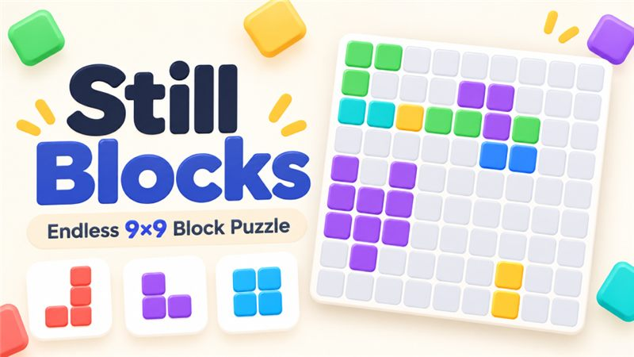

Block puzzle · LIK Studio
Still BlocksEndless 9×9 Block Puzzle
Яркая головоломка с блоками на поле 9×9. Размещайте цветные фигуры и ищите удачное решение в собственном темпе.

Головоломка
Найдите место каждому блоку
На игровом поле 9×9 появляются цветные фигуры. Продумывайте их расположение и продолжайте игру столько, сколько захотите.
01
Поле 9×9
Компактная сетка для короткой игры или долгого обдумывания.
02
Цветные блоки
Разные формы и яркие цвета помогают видеть игровую ситуацию.
03
Без спешки
Ищите подходящее размещение в удобном для себя темпе.
Информация
Поддержка и конфиденциальность
Связаться с LIK Studio
Напишите нам, если у вас есть вопрос или замечание об игре.
n.choi.sw@gmail.comAbout Still Blocks
Still Blocks is a colorful 9×9 block puzzle by LIK Studio. Place different shapes on the board and find room for the next move at your own pace.
Support: n.choi.sw@gmail.com · Privacy Policy